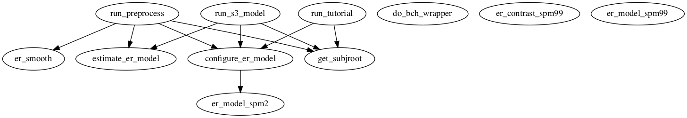

Master index
Index for marsbar/examples/batch
Dependency Graph for marsbar/examples/batch

Generated on Sat 25-Sep-2021 18:28:34 by
m2html
© 2003-2019
 Master index
Master index Master index
Master index